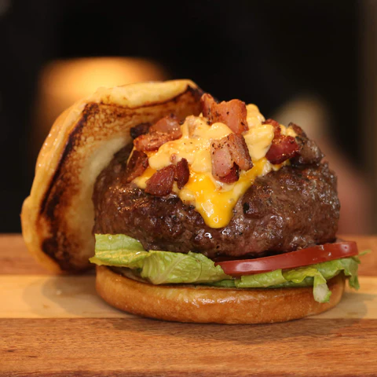

Burger Recipe

Step by step guide to making a Mac and Cheese Burger. This recipe proves that mac & cheese isn't just for kids, check it out!
Ingredients
- 8oz Ground Beef
- 1 tsp salt
- ½ tsp meat seasoning
- ½ cup of your favorite mac-n-cheese
- 1/4 cup minced jalapeno
- 4 slices bacon
- 1 slice sharp chedder
Instructions
- Mince jalapeno and set aside.
- Begin cooking bacon. You can put it in a pan, in the oven for about 15min at 400 degrees.
- Get your grill/pan/etc hot & begin boliing water.
- Mix salt and meat seasoning with the meat
- Form meat with Ultimate Burger Press.
- Grill your burger and cook to your desired temperature.